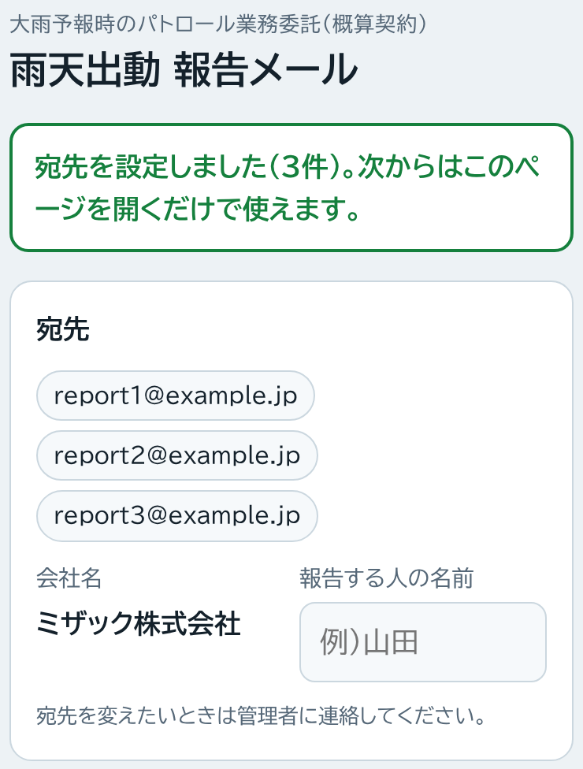
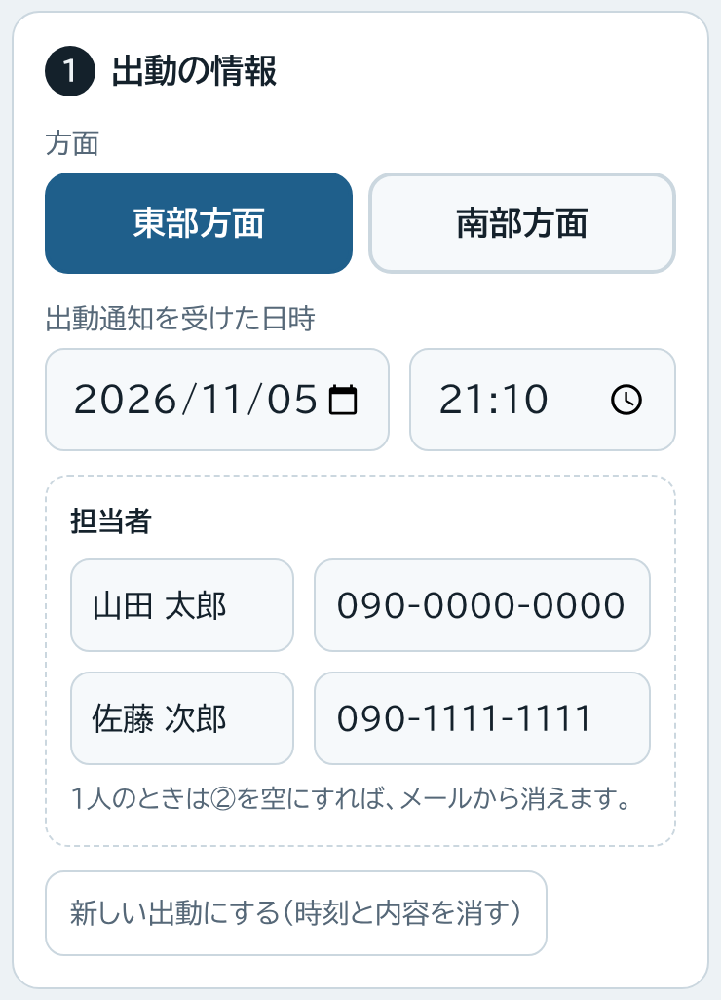
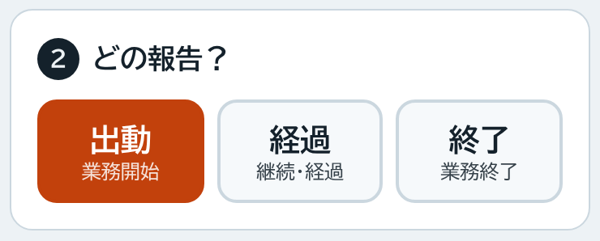
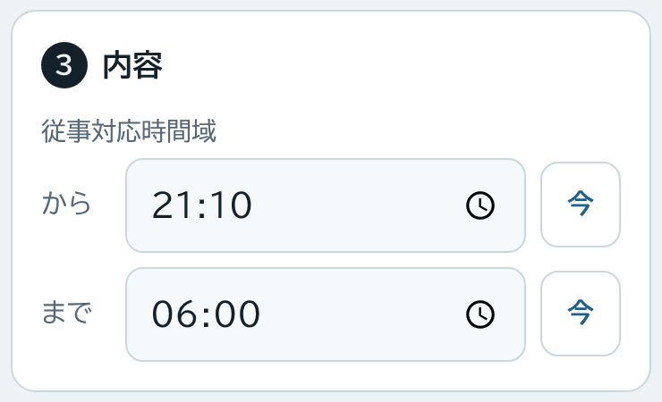
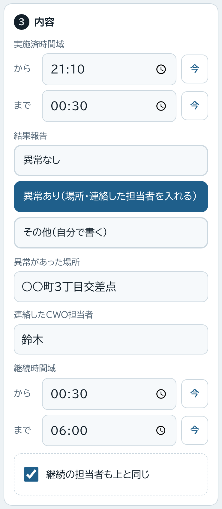
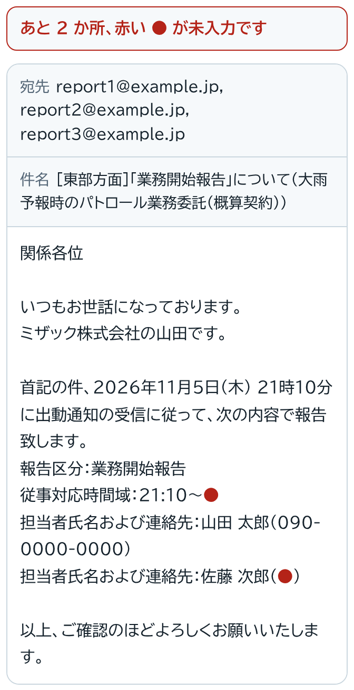
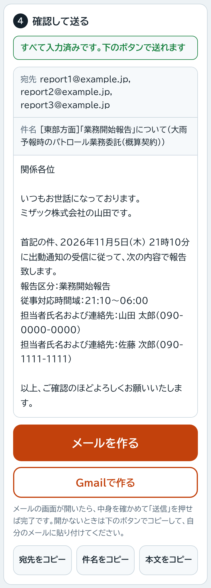
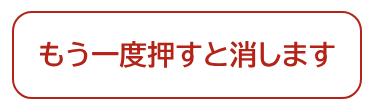
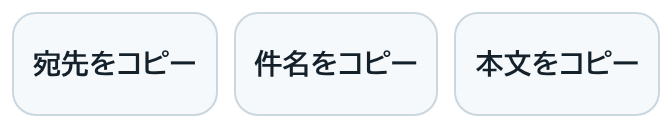

出動報告・経過報告・終了報告のメールを、スマホでかんたんに作るためのページです。
管理者から LINE やメールで届いた「設定入りリンク」を開きます。
緑の枠で「宛先を設定しました」と出れば準備完了です。宛先は自動で入るので、自分で入れる必要はありません。

「報告する人の名前」に名字を入れます。メールの「ミザック株式会社の○○です。」の部分になります。一度入れれば次からは入ったままです。
次からすぐ開けるように、スマホのホーム画面にアイコンを作っておきます。
次からは、ホーム画面のアイコンを押すだけで使えます。リンクをもう一度開く必要はありません。
報告は3回です。どれも同じページで、上から順に進めるだけです。
ここは経過報告・終了報告でも同じものを使います。一度入れれば残ったままです。

今から送る報告のボタンを押します。
押したボタンによって、下の入力欄とメールの文面が自動で切り替わります。

時刻の欄を押すと時刻を選べます。今 ボタンを押すと、今の時刻がそのまま入ります。
出動 のときは「従事対応時間域」の2つだけです。

「結果報告」から1つ選びます。
経過 のときは、この下に「継続時間域」も出てきます。担当者が同じなら、チェックを付けたままでOKです。

下にできあがったメールが表示されます。入れ忘れたところは赤い ● になっています。
上の枠が緑で「すべて入力済みです」になれば大丈夫です。

メールを作る を押すと、宛先・件名・本文が全部入った状態でメールの画面が開きます。
中身を確かめて、メールの画面の「送信」を押せば完了です。
開かないときは Gmailで作る を試してください。それでも開かないときは、下の「困ったとき」を見てください。

終了報告を送ったあと、次に出動するときは「新しい出動にする」を押します。押すと赤く変わるので、もう一度押すと時刻と内容が消えます。
担当者の名前と電話番号は消えずに残ります。

「宛先をコピー」「件名をコピー」「本文をコピー」を順に押して、いつも使っているメールに貼り付けて送ってください。

管理者に連絡して、設定入りリンクをもう一度送ってもらい、開いてください。
新しいスマホで設定入りリンクを開けば、そのまま使えます。名前と担当者はもう一度入れてください。
正しい内容で作り直して、もう一度送ってください。必要なら本文の最初に「訂正」と書き足してください。